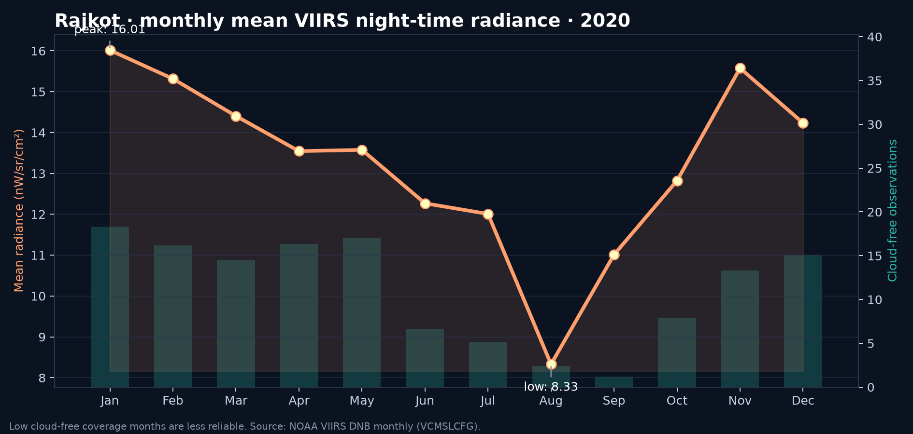

Rajkot · Night-time lights 2020
VIIRS monthly radiance and WorldPop population
Annual map: radiance, upper-quartile zone, population
Monthly explorer (slider + play)
Animation

Monthly mean radiance and data quality

Individual monthly maps
Population exposure discussion
WorldPop estimates 984,821 residents within the Rajkot ULB boundary; 500,540 (50.8%) reside in pixels at or above the annual city-level 75th-percentile radiance threshold. The top-radiance zone is defined by radiance, not by population, so its population share need not be 25%. Monthly city-mean radiance ranges from 8.33 nW/sr/cm² in 2020-08 to 16.01 nW/sr/cm² in 2020-01; interpret the late-monsoon lows cautiously because cloud-free observation coverage is also low. This is an area-based proxy for residence in brighter pixels, not personal light exposure or a measure of wealth, safety, or electricity access.
Population residing in city-specific upper-quartile annual mean radiance pixels; not individual exposure, household lighting, wealth, safety, or electricity access.
Annual mean of 2020 monthly avg_rad images. Upper-quartile radiance mask is at ~464 m VIIRS scale; the 2020 India WorldPop image is selected by year, country and Rajkot footprint. Its ~100 m population cells are masked by the VIIRS quartile zone during the population reduction, so grid alignment/resampling matters. Map rasters are smoothed for display only.
Mean cf_cvg is exported by month to monthly_mean_radiance.csv. Check low coverage before interpreting monthly changes; zero avg_rad is not automatically 'no lights'. Pixels below 0.2 nW/sr/cm² are made transparent in maps for display only.
Boundary: Rajkot (M.COP), ULB code 802501, from SBM_ULBs.geojsonl in the Indian administrative boundaries urban release; access date is not recorded in the source metadata.
Sources: VIIRS · WorldPop · ULB boundary release